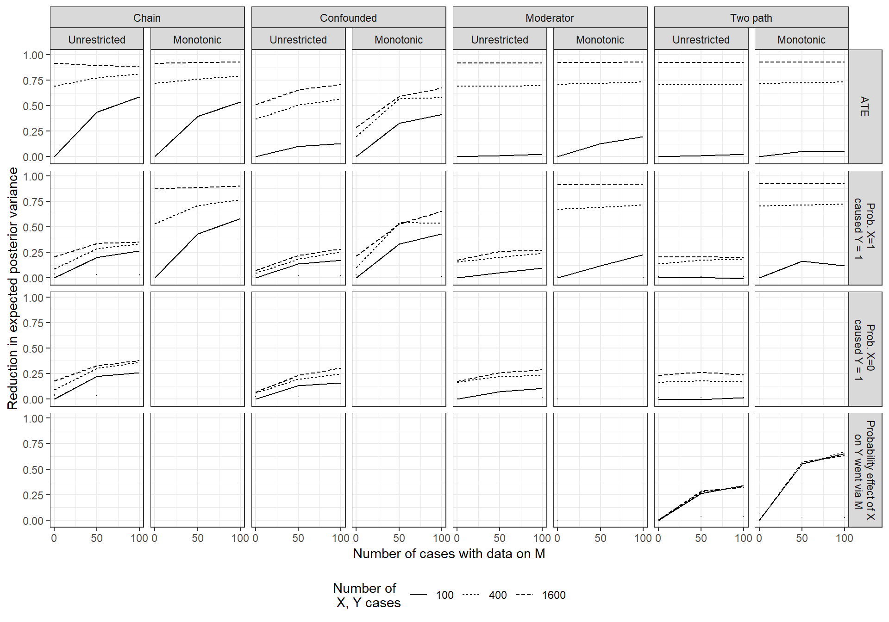

14 Going Wide, Going Deep
Chapter summary
We turn to the problem of choosing between going “wide” and going “deep”: between seeking a little bit of information on a large number of cases versus studying a smaller number of cases intensively. We outline a simulation-based approach to identifying the optimal mix of breadth and depth. Simulations suggest that going deep is especially valuable where confounding is a concern, for queries about causal pathways, and where models embed strong beliefs about causal effects. We also find that there are diminishing marginal returns to each strategy, and that depth often provides the greatest gains when we have cross-case evidence on only a modest number of cases.
We continue exploring how we can leverage causal models in making research-design choices by thinking about the tradeoff between intensive (deep) and extensive (wide) analysis.
Suppose that we have identified those clues that will be most informative and those cases in which it would be most valuable to conduct process tracing, given our beliefs about the world. A further question that we face is the classic challenge of methods mixing: What mixture of quantitative and qualitative evidence is optimal? We argued in Chapter 9 that the distinction between quantitative and qualitative inference is, in a causal-model framework, without much of a difference. But here we frame a more precise question: Given finite resources, how should we trade off between studying a larger number of cases at a given level of intensiveness, on the one hand, and drilling down to learn more intensively about some subset of the cases in our sample? How should we decide between going “wide” and going “deep”?
Just as with the selection of clues and cases examined in Chapters Chapter 12 and Chapter 13, how much we should expect to learn from going wide versus going deep will depend on our queries as well as on how we think the world works, as expressed in the causal model with which we start and as shaped by the data that we have seen at the point of making the wide-versus-deep decision.
We examine here queries commonly associated with large-\(N\), quantitative strategies of analysis (such as average treatment effects), as well as queries commonly associated with more case-oriented, qualitative approaches (queries about causal pathways and about causal effects at the case level). The analysis in this chapter makes clear the opportunities for integration across these lines of inquiry. We show that investing in in-depth process tracing will sometimes make sense even when one aims to learn about average effects in a population. Likewise, collecting \(X, Y\) data can sometimes help us draw inferences that will aid in case-level explanation. Particular kinds of case-level information can teach us about populations, and understanding population-level patterns can help us get individual cases right.
14.1 Walk-Through of a Simple Comparison
To build up our intuitions about how the optimal mix of strategies might depend on how the world works, let us explore a simple comparison of wide and deep strategies.
Imagine a world in which we have a large amount of data on \(X\) and \(Y\) (2000 observations), and we see that \(X\) and \(Y\) are perfectly correlated. We might be tempted to infer that \(X\) causes \(Y\). If \(X\) were randomly assigned, then we might be able to justify that inference. Suppose, however, that our data are observational and, in particular, we are aware of an observable confound, \(M\), that might determine both \(X\) and \(Y\). In that situation, the effect of \(X\) on \(Y\) is not identified. As shown by Manski (1995), this data pattern could be produced even if \(X\) had no effect but all those cases that were destined to have \(Y=1\) were assigned to \(X=1\) while all those who would have had \(Y=0\) regardless were assigned to \(X=0\). Indeed different priors could support beliefs about that the average effect lying anywhere between 0 and 1.
From Pearl’s (2009) backdoor criterion, however, we also know that if the right causal model is \(X \rightarrow Y \leftarrow M \rightarrow X\), then data on \(M\) would allow the effect of \(X\) on \(Y\) to be identified. We could estimate the effect of \(X\) on \(Y\) for \(M=0\) and for \(M=1\) and take the average. Let’s imagine that we think that this structural model is plausible. Substantively, we think we can gather data on how units are selected into treatment.
Suppose now that we aim to collect additional data, but that data on \(M\) for a single unit is far more costly than data on \(X\) and \(Y\) for a single unit. We thus face a choice between gathering a lot more data on \(X\) and \(Y\) (say, for 2000 more cases) or gathering a little data on \(M\) for a subset of cases—just 20 in this illustration. Which should we do? Are 20 cases sufficient to learn enough about the causal model to find out whether the correlation between \(X\) and \(Y\) is spurious or not?
We get an intuition for the answer by imagining the inferences we might draw in three extreme cases and comparing these to the base case. Figure 14.1 illustrates. The figures are generated by forming a model with \(X\rightarrow Y \leftarrow M \rightarrow X\), strong priors that \(\Pr(M=1)=0.5\), and flat priors on all other nodal types. In other words, in our priors, we think that \(M\) is equally likely to be a 0 or 1 but do not make assumptions about how it is related to \(X\) and \(Y\). We first update the model with a set of \(X,Y\) data—and then choose between going wider and going deeper.
Panel 1 in Figure 14.1 shows our posterior distribution over the average causal effect from observation of the base data: 2000 cases with \(X\) and \(Y\) perfectly correlated. The distribution is quite wide, despite the strong correlation, because the posterior includes our uncertainty over the nature of confounding. Our estimate for the \(ATE\) is 0.86 but with a posterior standard deviation of 0.1524. There is positive weight on all positive values of the \(ATE\).
How can we improve on this estimate?
One possibility would be to go wide and collect \(X,Y\) data on an additional 2000 cases. Panel 2 displays our posterior on the average causal effect with the addition of these 2000 cases. We assume that the new data also displays a perfect \(X,Y\) correlation, like the first set of data. Again, we could not imagine correlational data that more strongly confirms a positive relation, and now we have twice as much of it. What we see, however, is that investing in gathering data on 2000 additional cases does not help us very much. The mean of our posterior on the \(ATE\) is now 0.88, with a standard deviation of 0.1485. So the updating is very slight.
Suppose that, for the cost of gathering \(X,Y\) data on an additional 2000 cases, we could drill down on a random subset of 20 of the original 2000 cases and observe \(M\) in those cases. What might we learn?
Because we start out with a flat prior on how \(M\) will relate to \(X\) and \(Y\), we display inferences for two possible realizations of that pattern. In Panel 3, we show the updating if \(M\) turns out to be uncorrelated with both \(X\) and \(Y\). The mean of our posterior on the \(ATE\) now rises to 0.98, and the posterior standard deviation shrinks dramatically, to 0.004. Greater depth in a relatively small number of cases is enough to convince us that the \(X,Y\) relationship is not spurious.
Panel 4 shows inferences from the same “going deep” strategy but where \(M\) turns out to be perfectly correlated with \(X\) and \(Y\). Now our estimate for the \(ATE\) shifts downward to 0.79, with a posterior standard deviation of 0.1661. In this case, we have no leverage to estimate covariation between \(X\) and \(Y\) within each \(M\) condition. However, we do not give up on the possibility of strong treatment effects. Indeed while the data are consistent with perfect confounding and no true causal effect, they are also consistent with perfect confounding and a strong causal effect. We just can’t tell these apart.
In other words, in this setup, what we observe from our “going deep” strategy can have a big impact on our inferences. One reason we stand to learn so much from process-tracing so few cases is that the process-tracing speaks to relationships about which we start out knowing so little: \(M\)’s effect on \(X\) and \(M\)’s effect on \(Y\), effects on which the \(X,Y\) data themselves shed no light.
It is also interesting to note that we cannot learn as much by updating only using information from the 20 cases for which we have full \(X\), \(M\), \(Y\) data. Were we to use only the subset with this complete data—ignoring the other 1880 cases—and observe \(M\) to be uncorrelated with \(X\) and \(Y\), the mean of our posterior on the \(ATE\) would be 0.98 with a posterior standard deviation of 0.004 (not graphed). The breadth provided by those 1880 \(X,Y\)-only cases thus adds a great deal. While observing an uncorrelated \(M\) in 20 cases allows us to largely rule out \(M\) as a cause of any \(X,Y\) correlation, observing a strong \(X,Y\) correlation over a large number of cases provides evidence that \(X\) in fact affects \(Y\).
We use this example to highlight a simple but stark point: There will be situations in which the expected gains from collecting more data on the same cases and from collecting the same data on more cases will be different, sometimes very different. The model and the prior data shape the tradeoff. In this particular setup, it is the confounding together with the large number of prior \(X,Y\) observations that makes depth the better strategy. Once we have learned from 2000 \(X,Y\) observations, data of the same form from more cases will not change beliefs. Yet going deep—even if only in a few cases—provides information on parameters we know nothing about, helping us draw causal inferences from the \(X,Y\) correlation.
14.2 Simulation Analysis
While the results in the last section are striking, they depend upon particular realizations of the data under each strategy. When selecting strategies we, of course, do not know how the data will turn out. Our problem becomes, as in the clue- and case-selection analyses, one of figuring out the expected posterior variance from different strategies.
14.2.1 Approach
The more general, simulation-based approach that we introduce here is parallel to the approach for clue- and case-selection. The steps of this procedure are as follows:
- Model. We posit a causal model, along with any priors or restrictions.
- Prior data. We specify the data that we already have in hand. For the simulations below, we assume no prior data.
- Strategies. We then specify a set of mixing strategies to assess. A strategy, in this context, is defined as a combination of collecting data on the same nodes for a given number of additional cases (randomly drawn from the population) and collecting data on additional nodes for some number of cases randomly sampled from the first set of cases.
- Data possibilities. For each strategy, we define the set of possible data-realizations. Whereas for case-selection, the structure of the possible data-realizations will be the same for all strategies with a given \(N\), possible data patterns in wide-versus-deep analyses involve much greater complexity and will vary in structure across strategies. This is because the number of cases itself varies across strategies. Also, whereas we fix the \(X,Y\) pattern for the purposes of case-selection, here we allow the \(X,Y\) patterns we discover to vary across each simulation draw.
- Data probabilities. As for case-selection, we use the model and prior data to calculate the probability of each data possibility under each strategy.
- Inference. Again, as for case-selection, we update the model using each possible data pattern to derive a posterior distribution.
- Expected posterior variance. We then average the posterior variances across the possible data patterns under a given strategy, weighted by the probability of each data pattern.
14.2.2 Simulation Results
We now explore alternative mixes of going wide and going deep for a range of models and queries, the same set that we examined for case-selection in Chapter 13. We present the results in a compact form in Figure 14.2. The macro-structure of the figure is the same as that of Figure 13.2 in Chapter 13, with models being crossed with queries. Again, we focus on the reduction in expected posterior variance. To help with scaling, we plot the reduction in expected posterior variance relative to the expected posterior variance for the least deep and least wide strategy under consideration.
Within each panel, each line represents going wide to a differing degree: collecting \(X,Y\) data for \(N=100\), for \(N=400\), and for \(N=1600\). We show results for a strategy with no process-tracing, for process tracing 50 of the \(X,Y\) cases, and for process-tracing 100 of the \(X,Y\) cases. On the \(y-\)axis of each graph, we plot the reduction in expected posterior variance from each wide-deep combination, relative to the a strategy with \(N=100\) and no process tracing.1

Looking at the figure as a whole, one pattern that leaps out is that there are gains from going wider for almost all model-query combinations. For some designs (the confounded model being a notable exception), we achieve close to a full reduction in posterior variance for the \(ATE\) as we go to 1600 \(X,Y\) cases. We can also see, unsurprisingly, that the marginal gains to going wide are diminishing.
There are, however, some situations in which going wider appears to add little or nothing. One of these is where we want to estimate the probability that a positive effect runs through the indirect path in a two path model. For this query and model, we learn significantly from gathering more within-case information, but little from observing \(X\) and \(Y\) in a wider set of cases (see the two rightmost boxes in the bottom row).
Focusing just on the gains to depth, we see that these are more concentrated in specific model-query combinations. Going deep to learn about the \(ATE\) appears at best marginally advantageous—at least up to process-tracing 100 cases—for the unrestricted moderator models and for the two-path models. Gains are also modest for these the probability of positive or negative causation under these models.
On the other hand, we learn more from going deep, in both the unrestricted and monotonic chain models, and the confounded models (of course, except when the query is the probability that \(X=0\) caused \(Y=1\) in a monotonic model, where the model itself answers the query). And we learn from going deep for the query that the effect of \(X\) runs through \(M\) in the two path model. As we saw with going wide, the marginal gains from going deep are diminishing.
In general, learning from going deep is stronger in the restricted models, but it is not limited to these. Thus, we don’t need a built in probative value; rather, we learn about \(M\)’s probative value (as discussed in Chapters Chapter 9 and Chapter 10) from the data.
Perhaps the most striking feature is the limited learning in the two-path model. Here, as with the moderator model, but unlike the confounded model, the ATE is identified without process data. But we do not see the gains from learning about \(M\) that we see in the chain model. In a two-path model, observing \(M\) correlated with \(X\) and with \(Y\) across a set of cases should allow us to learn about \(M\)’s informativeness about the operation of an indirect effect, just as we can learn about \(M\)’s probative value in a chain model. The problem is that knowing about the indirect effect in a two-path model contributes only marginally to the first three queries in the figure since these are about total effects. Thus, even adding monotonicity restrictions, which makes \(M\) a priori informative, does not significantly improve learning from \(M\) about total effects.
The important exception, when it comes to learning about the two-path model, is when it is the pathway itself that we seek to learn about. As we can see in the figure, we can learn a great deal about whether effects operate via \(M\) by observing \(M\), even in an unrestricted two-path model. Interestingly, the gains from depth for causal-effect queries in an unrestricted chain model closely resemble the gains from depth for the indirect-effect query in the unrestricted two-path model. This similarity suggests that both kinds of model-query combinations allow for learning about \(M\) that, in turn, permits learning from \(M\).
We also see that the context in which depth delivers the steepest gains of all is when we seek to learn about the probability of an indirect-effect in a monotonic two-path model. Part of the reason is likely that \(M\) is a priori informative about the operation of the mediated pathway (as it is about the operation of effects in the monotonic chain model). Additionally, however, it appears that we start out with relatively high uncertainty about the pathway query because the model itself is quite uninformative about it. Thus, for instance, we learn much more from depth here than we do for a total effect query in a monotonic chain model: The monotonicity assumptions themselves already tell us a great deal about total effects, whereas they imply nothing about the path through which effects unfold. There is simply more to be learned from \(M\) about pathways than about total effects.
Most interesting, perhaps, is using the graphs to examine different wide versus deep tradeoffs we might face. Suppose, for instance, that we wish to learn about the probability that \(X\) caused \(Y\) in an unrestricted confounded model. We start out with \(X,Y\) data for 100 cases and have additional resources with which to collect more data. Let us further assume that the cost of collecting \(X,Y\) data for an additional 300 cases is equal to the cost of collecting \(M\) on 50 of the original 100 cases. Where should we invest?
We can read a fairly clear answer off the graph. As we can see in the relevant graph, we can expect to do better by adding depth than by adding breadth. In fact, even expanding our \(X,Y\) sample to 1600 cases only gets us about as much leverage as we get from process-tracing 50 cases.
We can also see how the optimal choice depends on what data-collection we have already done or committed to. For the same example, imagine we do indeed commit to gathering data on \(M\) for 50 cases and then get additional resources. We would then expect to be much better by investing in an expansion to 300 \(X,Y\) cases than by process-tracing the other 50 \(X,Y\) cases.
The chain models, both unrestricted and monotonic, also show clearly how expected learning from one strategy depends on how much of the other strategy we have already exploited. We can see for both the \(ATE\) and the probability of positive causation that the gains to depth are much greater if we have done less process tracing. Similarly, the gains from depth are much greater at lower numbers of \(X,Y\) cases.
A further question we can ask is: Where are mixing methods advantageous? And when are maximally wide or maximally deep strategies best? We can examine this question by comparing a strategy with maximal breadth and no process tracing; a strategy with maximal process-tracing and minimal breadth; and a strategy in which we invest in a mixture of new data, by examining \(X,Y\) in 400 cases while process-tracing 50 cases.
We see some places where we are best off going as wide as possible, at least for the ranges we explore in these simulations. For instance, if we wish to estimate the \(ATE\) in a chain model (unrestricted or monotonic), a pure “going wide” strategy is optimal. At the other extreme, when we seek to learn about the probability of an indirect effect from an unrestricted two-path model, we are best off process-tracing our original 100 cases and gain nothing by expanding our sample.
In many contexts, however, the mixing strategy performs best. The advantage of mixing appears starkest for the confounded monotonic model. Suppose we start with only \(X\) and \(Y\) data for 100 cases under this model. If we can collect more data, how should we do so? A mixed strategy of expanding to 400 \(X,Y\) cases and process-tracing 50 of them does much better than either a purely extensive strategy of analyzing \(X,Y\) in 1600 cases or a purely intensive strategy of process-tracing all 100 cases, both for estimating both the \(ATE\) and the probability of positive causation.
14.3 Factoring in the Cost of Data
We can also use these results to think through optimal allocations of resources with varying prices for breadth and depth. To illustrate, consider the unrestricted chain model, where we see similar expected posterior variance for the probability of positive causation query from the following three combinations of wide and deep (first column, third row in Figure 14.2):
- Maximally wide: 1600 wide + 0 deep
- Maximally deep: 100 wide + 100 deep
- Mixed: 400 wide + 50 deep
Which strategy is optimal will depend on the relative cost of collecting \(X,Y\) data for a new case (which we normalize to a cost of 1) and collecting \(M\) for an existing case (at cost \(d\) per observation).
For this model-query combination, the widest strategy is better than the deepest strategy if and only if \(1600 < 100 + 100d\), that is, when \(d > 15\). The mixed strategy is better than the maximally deep strategy if and only if \(400 + 50d < 100 + 100d\), that is when \(d > 6\). And the maximally wide strategy is better than the mixed strategy if and only if \(1600 < 400 + 50d\), or \(d > 24\). Thus, roughly speaking, if \(d < 6\), then our ordering is deepest > mixed > widest, if \(6 < d < 15\), our ordering is mixed > deepest > widest; if \(15 < d < 24\), our ordering is mixed > widest > deepest, and if \(d > 24\), our preference-ordering is widest > mixed > deepest. We can, thus, see that the mixed strategy is optimal across a broad range of \(d\), though for sufficiently cheap or expensive within case data gathering, it may be optimal to go purely wide or purely deep.
14.4 Conclusion
As we found in our analysis of case-selection in Chapter 13, the merits of different combinations of breadth and depth depend on the query we are trying to answer and the model we are working with. And as for case-selection, the approach that we propose to make the wide-versus-deep tradeoff is one that can take account of both the expected learning and the costs of different options. Specifying these can be important for determining the optimal strategy.
While the scope for general rules of thumb is limited, one striking pattern is that we tend to see, across simulations, is diminishing marginal returns to both going wider and going deeper. This suggests that optimal strategies will likely involve some level of mixing of the two approaches. There are, however, certain extreme situations in which optimal strategies involve either maximizing going wide or maximizing going deep. A striking example is the two-path model (with possibly direct effects of \(X\) on \(Y\) and effects passing through \(M\)). For the simple ATE, the gains under this model all arise from going wide; whereas ,for determining whether effects passed through \(M\), all the gains arise from going deep. Again, the main lesson remains the same: The benefits of any given research design will depend on what kind of question we are posing to what kind of model.
Note that the expected posterior variance is always \(0\) for queries that are already answered with certainty by the model itself, such as the probability of a negative effect in a model with negative effects excluded, and so the reduction in expected posterior variance is not defined. Note also that in this figure we exclude the 0.5% of observations with the highest variance in each set because of extreme skew in the distribution of variance estimates. This smooths the figures somewhat but does not affect substantive conclusions.↩︎